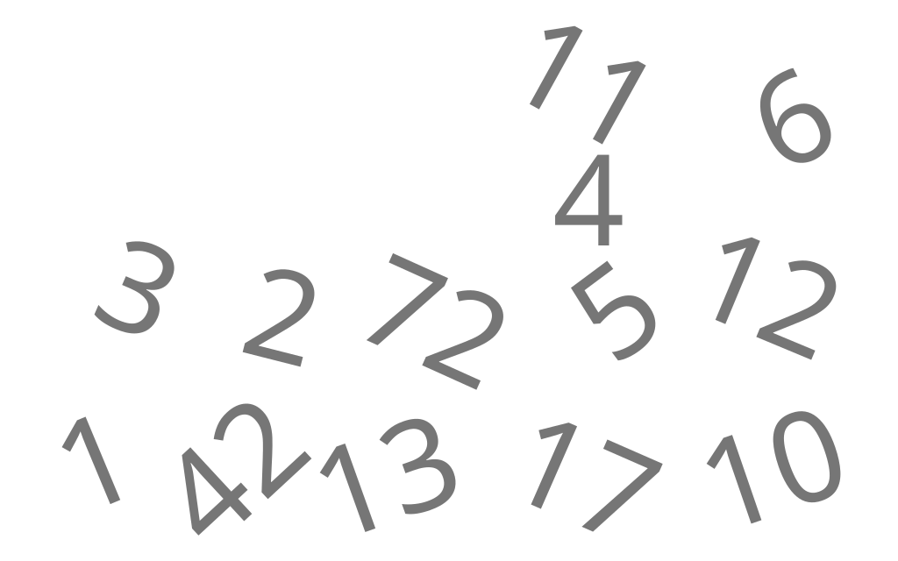
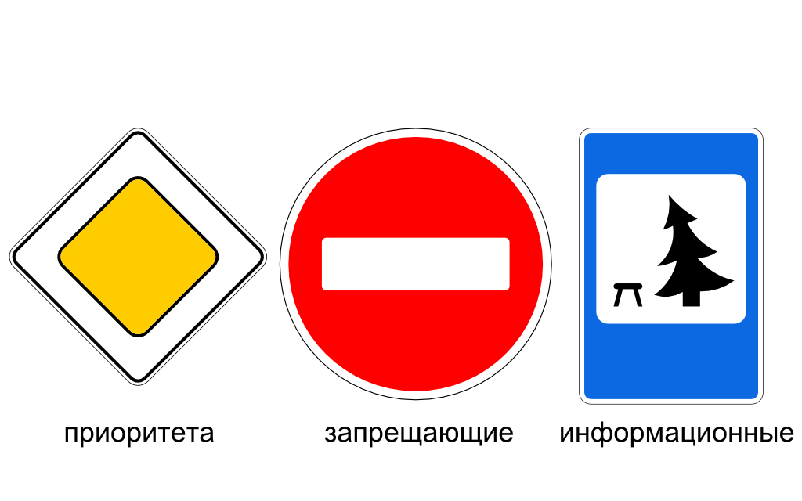
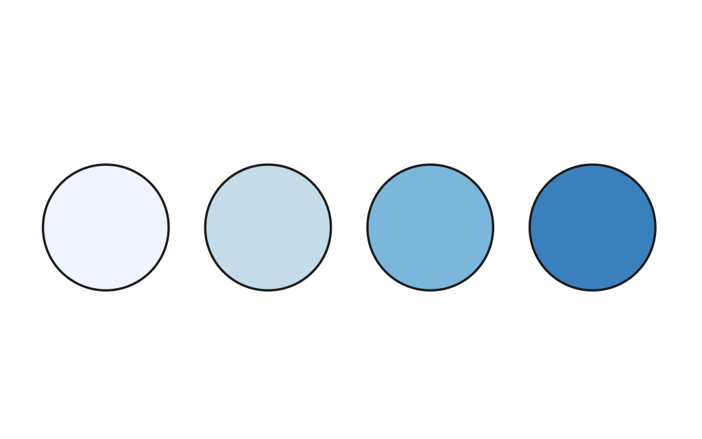
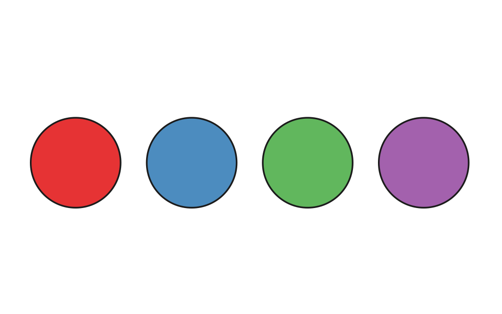
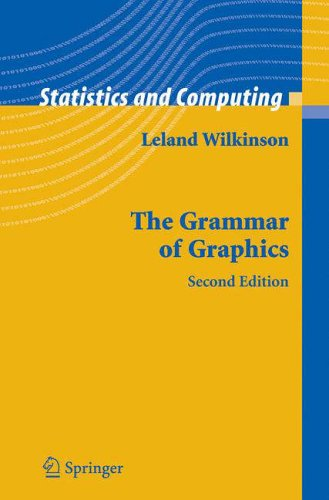

Как люди воспринимают информацию?
Как отобразить информацию, чтобы быстро понять ее смысл?
Типы данных
- Количественные (Quantitative)
- Упорядоченные / Качественные
(Ordered / Qualitative)
- Категорийные (Categorical)
Количественные

Все что может быть выражено в числах.
Например, длина удава в попугаях.
Упорядоченные / Качественные
Категорийные

Визуальное кодирование (Visual encoding)
Переменные:
- Планарные (Planar)
- Визуальные (Retinal)
Jacques Bertin - Semiology
of Graphics
Визуальные
- Размер (Size)
- Текстура (Texture)
- Форма (Shape)
- Ориентация (Orientation)
- Цвет (Color)
Оттенки цвета (Color Value)

Значения цвета (Color Hue)

Как это применить к данным?
Grammar of graphics
Leland Wilkinson

Давайте композировать элементы, а не рисовать готовые чарты
-
Scatterplot:
ELEMENT: point(position(d*r))
-
Line Chart:
ELEMENT: line(position(d*r))
-
Bar Chart:
ELEMENT: interval(position(d*r))
-
Pie Chart:
COORD: polar.theta(dim(1))ELEMENT: interval.stack(position(summary.proportion(r)), color(c))
Что используем
- D3 для отрисовки
- ES6
- Mocha и Chai
- Karma
- Grunt
- TravisCI
Какой же построить график?